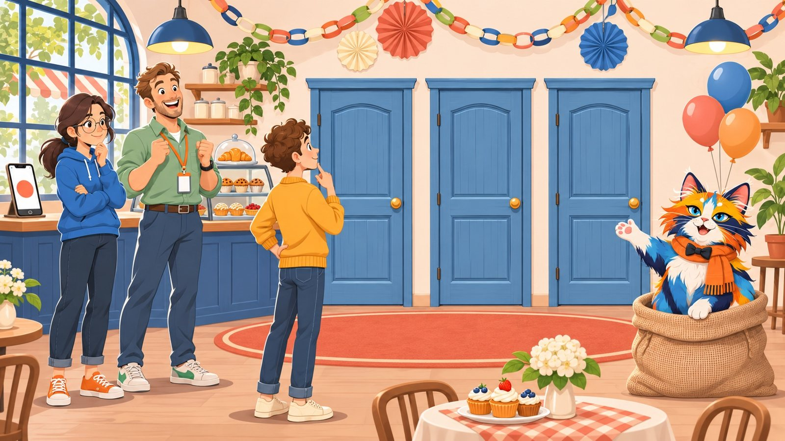
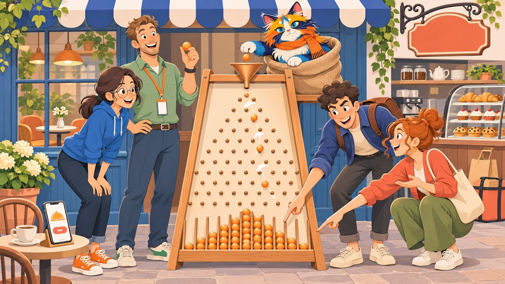

Касса пищит — Боб уверен, что фальшивка. Алиса спрашивает: «А сколько вообще фальшивок?» Без этого числа писк ничего не говорит.
Сначала вспомним
На утреннем собрании 6 бариста, каждый пожал руку каждому. Сколько было рукопожатий?
Рукопожатие — пара бариста, порядок не важен: — шаг 3.
Гость оставляет отзыв с шансом 20%. За вечер 5 заказов. Как часто будет хотя бы один отзыв?
«Хотя бы один» — через «ни одного» — шаг 4: все пятеро промолчат с шансом , значит, хотя бы один отзыв будет примерно в 67 вечерах из 100.
Шаг 6 из 9
Байес
После шага ты сможешь посчитать в штуках из 1000, сколько сигналов настоящие, и не путать с .
В кафе поставили кассу, которая ловит фальшивые купюры. Ловит она 99% фальшивок, а на настоящие пищит зря лишь в 1% случаев. Касса пискнула. Боб уже звонит в полицию. Насколько он прав?
Касса пискнула. Это фальшивка?

Боб, продакт
Касса точна на 99%. Раз пискнула — 99%, что фальшивка!

Алиса, аналитик
А сколько вообще фальшивок нам приносят? По данным банка — примерно одну на 1000 купюр.

Котейка
У меня в мешке как раз 1000 купюр. Пропустим через кассу?
Напиши число — на следующей карточке пропустим купюры через кассу.
Пропусти 1000 купюр через кассу
Каждая клетка — купюра. Нажми кнопку, а потом надень рамку «только писки»: что осталось внутри?
1000 купюр по исходу проверки
фальшивка, касса пискнуланастоящая, касса пискнула зряфальшивка, касса промолчаланастоящая, тишина
0купюр прошло
0писков
0из них фальшивок
—фальшивок среди писков
Подвигать кассу
Где прячутся писки
Возьмём сразу 100 000 купюр, чтобы фальшивок было не одна, а сотня. Обведи ветки, где касса пищит, вычеркни остальные.
100 000 купюр
100 фальшивых
одна из тысячи
одна из тысячи
99 пищат
касса ловит 99%
касса ловит 99%
1 молчит
99 900 настоящих
999 пищат
ложное срабатывание, 1%
ложное срабатывание, 1%
98 901 молчат
Писков всего 99 + 999 = 1098. Фальшивых среди них 99 — это 9%. Остальные 91% писков — честные купюры.
Касса не плохая: она пищит на фальшивку в 99 раз чаще, чем на настоящую. Но настоящих купюр в 999 раз больше. Широкое поле честных купюр с маленькой долей ошибок даёт писков больше, чем узкая колонна фальшивок.
Идея подачи частотами — из книги: Gerd Gigerenzer, «Risk Savvy»
Сначала база, потом сигнал
История
В штуках
Из 100 000 купюр 100 фальшивых, касса ловит 99. Из 99 900 настоящих пищит на 999. Среди 1098 писков 99 фальшивых — около 9%.
Формула
Словами: H — «фальшивка», E — «писк». Доля настоящих сигналов = пойманные фальшивки / все писки. Знаменатель — формула полной вероятности из шага 5.
Узкая колонна против широкого поля
Квадрат — все купюры. Ширина левой колонны — база, то есть доля фальшивок, высота закраски в ней — сколько фальшивок ловит касса. Справа — поле настоящих купюр и ложные срабатывания. После писка остаются только закрашенные куски.
Единичный квадрат: фальшивки и настоящие купюры
Касса пищит на фальшивку в 99% / 1% = 99 раз чаще, чем на настоящую. Это её сила, и она не зависит от базы. До писка шансы «фальшивка : настоящая» были 1 : 999, после писка — 99 : 999, примерно 1 : 10. Сигнал не говорит шанс, а умножает его.
Идея из роликов: 3Blue1Brown, «Bayes theorem, the geometry of changing beliefs» и «The medical test paradox»
Перевёрнутое условие
Боб, продакт
Касса ошибается на настоящих купюрах только в 1% случаев. Значит, если она пискнула, купюра настоящая лишь с шансом 1%.
Что не так у Боба?
: среди 99 900 настоящих пищат 999. : среди 1098 писков настоящих 999. Это доли в разных мирах — в рамке «настоящие» и в рамке «писки».
Та же путаница живёт в A/B‑тестах. p‑value — это «вероятность таких или ещё более крайних данных, если эффекта нет», то есть . Её часто читают как «вероятность, что эффекта нет, при таких данных». Это перевёрнутое условие — как у Боба.
Без формул и с другими играми — в «A/B на пальцах», шаг 7 «p‑value на пальцах» и шаг 8 «Два вида ошибок». С формулами — в «Сигнале или шуме», глава 12 «„Прокрасилось“ — значит, работает?».
Розыгрыш на празднике: три двери

За одной из трёх дверей торт, за двумя — пусто. Ты выбираешь дверь. Котейка знает, где торт, и открывает одну из двух других — пустую. Потом предлагает: поменять дверь или оставить?
Выбери дверь.
0 из 0меняли и выиграли
0 из 0оставили и выиграли
Правила ведущего
Обведи, вычеркни, перенормируй
История
Твоя дверь угадана с шансом 1/3, и открытая Котейкой дверь этого не меняет: какую бы ты ни выбрал, пустую ему открыть есть что. А вот если ты не угадал, Котейка вынужден открыть единственную пустую из двух — и тем самым показывает, где торт.
В штуках
300 игр, ты всегда берёшь дверь 1. Торт за дверью 1 — в 100 играх: смена проигрывает. За дверью 2 — в 100: Котейка открывает дверь 3, смена выигрывает. За дверью 3 — в 100: Котейка открывает дверь 2, смена выигрывает. Смена выигрывает в 200 играх из 300.
Формула
Словами: обведи ветки, где Котейка открыл дверь 3; вычеркни остальные; доли оставшихся растяни, чтобы в сумме была единица. Условие — не «за дверью 3 пусто», а «Котейка открыл дверь 3».
Поэтому ответ зависит от правил ведущего. Переключи их в игре: если Котейка открывает дверь, только когда ты угадал, менять — проигрывать каждый раз. Если открывает наугад и там случайно пусто — выходит 50 на 50.
Идея из лекций: Joe Blitzstein, Stat 110 «Probability», лекция про Монти Холла; правила ведущего — из книги: Gerd Gigerenzer, «Risk Savvy»
Функция Байеса на все случаи
Допиши posterior(base, sens, fpr): доля настоящих среди сигналов. base — база, sens — доля пойманных, fpr — доля ложных срабатываний.
Три задачи на Байеса
Схема ответа одна: переформулируй → посчитай в штуках → запиши формулу → проверь симуляцией → скажи вывод одной фразой.
Вариант условия 1 · в больнице
Редкое заболевание бывает у 1 человека из 1000. Тест ошибается в 1% случаев в обе стороны. Тест положительный — какова вероятность, что человек болен?
Переформулирую: это касса из шага: база 0.1%, чувствительность 99%, ложные срабатывания 1%. Нужна доля больных среди положительных.
В штуках: из 100 000 человек больны 100, тест находит 99. Из 99 900 здоровых положительный у 999. Положительных 1098, больных среди них 99.
Формула: .
Вывод: около 9%: тест поднял шанс в 90 раз, но большинство положительных — ложные, потому что здоровых намного больше.
Другой вариант условия · та же задача в кафе
В сети кофеен редкая поломка — засор бойлера — бывает у 1 кофемашины из 1000. Датчик засора ошибается в 1% случаев в обе стороны: пропускает 1% засоров и загорается на 1% исправных машин. На кофемашине загорелся датчик — какова вероятность, что бойлер действительно засорился?
Переформулирую: это касса из шага: база 0.1%, датчик ловит 99% засоров, ложные срабатывания 1%. Нужна доля засоров среди машин с горящим датчиком.
В штуках: из 100 000 кофемашин засор у 100, датчик загорается у 99 из них. Из 99 900 исправных датчик загорается у 999. Горящих датчиков 1098, засоров среди них 99.
Формула: .
Вывод: около 9%: датчик поднял шанс в 90 раз, но большинство тревог ложные, потому что исправных машин намного больше. Горящий датчик — повод проверить бойлер, а не сразу вызывать мастера.
Промокодом злоупотребляют в 2% заказов. Флаг антифрода ловит 90% злоупотреблений и ошибочно срабатывает на 5% честных заказов. Флаг сработал — какова вероятность злоупотребления? А если сработали два независимых флага с такими же параметрами?
Переформулирую: нужна доля злоупотреблений среди флагов, потом — среди заказов с двумя флагами. Допущение: флаги ошибаются независимо друг от друга.
В штуках: из 100 000 заказов 2000 злоупотреблений, флаг ловит 1800. Из 98 000 честных флаг срабатывает на 4900. Среди 6700 флагов злоупотреблений 1800 — около 27%.
Два флага: оба ловят злоупотреблений — 1620 заказов. Оба ошибаются на честных — 245 заказов. Злоупотреблений среди них 1620 из 1865 — около 87%.
Формула: ; для двух флагов подставь 0.27 как новую базу.
Вывод: один флаг — повод проверить заказ (27%), два флага — повод блокировать (87%): второй сигнал переводит ответ через 50%.
Три двери, за одной приз. Ты выбрал дверь, ведущий, который знает, где приз, открыл одну из двух других — пустую. Менять ли выбор?
Переформулирую: какова вероятность приза за оставшейся дверью при условии, что ведущий открыл именно эту пустую дверь. Допущения: ведущий всегда открывает пустую дверь и, если может открыть любую из двух, выбирает наугад.
В штуках: из 300 игр твоя дверь угадана в 100 — тогда смена проигрывает. В остальных 200 ведущему остаётся одна пустая дверь, и смена выигрывает.
Формула: .
Проверка: 1000 игр автоматом в игре.
Вывод: менять — выигрыш в двух играх из трёх; но ответ держится на правилах ведущего, их стоит назвать вслух.
Вопросы про Байеса
Один флаг антифрода даёт 27% злоупотреблений среди флагов. На заказе сработали два независимых флага. Какова доля злоупотреблений теперь?
Из 100 000 заказов оба флага ловят 1620 злоупотреблений и ошибаются на 245 честных: . То же — если подставить 27% как новую базу в формулу Байеса.
Фальшивок 1 из 1000, а среди писков кассы — только 9%. Есть ли от кассы толк?
Писк поднимает шанс фальшивки в 90 раз: из 1000 купюр проверить нужно не все, а около 11 пискнувших. Сигнал полезен, даже когда большинство тревог ложные.
Котейка не знает, где торт, и открывает одну из двух других дверей наугад. Там случайно пусто. Менять?
Из 300 игр в 100 Котейка случайно открывает торт — такие игры не считаем. В оставшихся 200 торт за твоей дверью в 100 и за другой — в 100. Проверь в игре, переключив правила ведущего.
Боб: «Котейка открыл пустую дверь, осталось две — значит, 50 на 50». Котейка знает, где торт, и всегда открывает пустую. Что не так у Боба?
Когда ты не угадал, а это 2 игры из 3, Котейка вынужден открыть единственную пустую из двух — и торт оказывается за оставшейся дверью.
Сначала база, потом сигнал
- Байес: , где .
- В штуках: пойманные / все сигналы. Касса: .
- и — разные числа. Не переворачивай условие.
- Шансы: после сигнала = до сигнала × (доля пойманных / доля ложных срабатываний). 1 : : 10.
- Второй независимый сигнал — новый шаг Байеса: 27% → 87%.
- Монти Холл: если ведущий знает и всегда открывает пустую — менять, 2/3. Ответ зависит от правил ведущего.
- Априорная вероятность
- доля до сигнала, база; на собеседовании — prior, base rate
- Апостериорная вероятность
- доля после сигнала, ; на собеседовании — posterior
- Чувствительность
- доля пойманных среди настоящих, ; на собеседовании — sensitivity, recall
- Ложное срабатывание
- сигнал без причины, ; на собеседовании — false positive rate
- Прогностическая ценность
- доля настоящих среди сигналов, ; на собеседовании — precision, PPV
